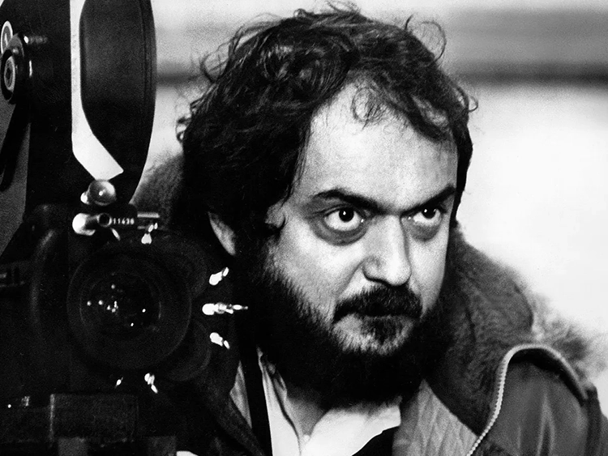
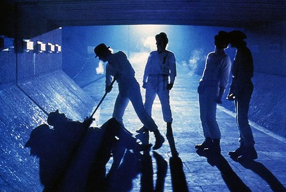

ORANGE MECANIQUE STANLEY KUBRICK
synopsis
Réunis au Korova Milk-Bar, Alex et sa bande s'abreuvent de drogues avant de partir pour une virée ultraviolente. Après avoir battu à mort un clochard ivre, ils pénètrent dans une maison, violent la femme et blessent gravement le mari. Le lendemain, Alex est capturé par la police après avoir tué, sans le vouloir, une nouvelle victime.
Stanley Kubrick sur le plateau de «Orange mécanique», 1971
musiques
La musique de Wendy Carlos est inspirée des maîtres du classique et baroque. Dans ce film leurs musiques donnent un aspect torturé, distordu par les traitements du synthétiseur modulaire moog, comme pour accentuer la folie du personnage principal, Alex. La compositrice a composé des morceaux pour le film comme : «Thème d’Orange mécanique (Beethoviana)», et «Timesteps», des titres que Wendy Carlos qualifie à la fois de «sériels» et de «dogmatiques». Réarrangée ou non, la musique classique est détournée de sa fonction première.
| March from a Clockwork Orange | 7:00 |
| Title Music from A Clockwork Orange | 2:21 |
| William Tell : Overture (Abridged) | 1:20 |
| Timesteps | 3:50 |
| Country Lane | 4:43 |
| Ninth Symphony : seconde Movement | 4:52 |
| Theme From «Clockwork Orange» | 2:26 |
| Theme From a Clockwork orange (Beethoviana) | 1:43 |
| La Gazza Ladra | 5:50 |
| Orange Minuet | 2:36 |
| Biblical Daydreams | 2:06 |
Extrait d’une des musiques du film sur spotify
Archives de film

00:04:16
Alex et sa bande battant un SDF sous un pont
00:26:30
Alex parlant à deux femmes qui mangent une sucette
00:32:12
La bande à Alex allant boire un verre
01:12:17
Alex criant devant un film violent
01:30:07
Alex rentrant chez lui après la prison